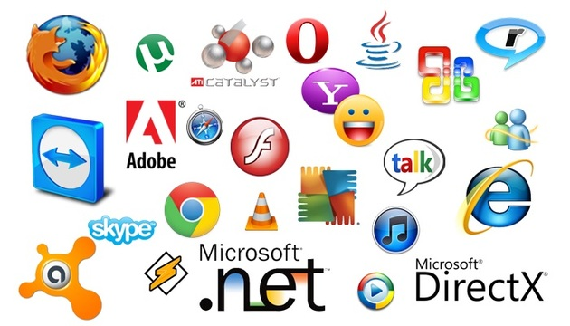

O que é hardware?
Os hardwares são as peças físicas que compõem um computador, como as
placas, o monitor, o teclado, a placa-mãe e o disco rígido.
Eles são divididos em quatro elementos:
- Dispositivos de entrada: são os componentes que o
usuário conecta, como teclado e mouse. - Dispositivos de saída: são os componentes que
traduzem os dados recebidos para uma linguagem acessível ao usuário,
como o monitor e as caixas de som. - Componentes internos: são as peças que se conectam
entre si para que o computador funcione. - Dispositivos de armazenamento secundário: são os
componentes responsáveis por armazenar os dados de forma
permanente no computador.
Exemplos de hardware

Confira no quadro a abaixo os principais elementos que compõem o
hardware de um computador:
| Elemento | Descrição |
|---|---|
| Monitor | É o equipamento que permite a visualização das informações solicitadas pelo usuário. |
| Teclado | É o elemento que permite a digitação, além de também ser usado para comandos em jogos. |
| Mouse | É o componente que possibilita o usuário direcionar o cursor e clicar em locais específicos para executar uma tarefa. |
| Caixa de som | É o equipamento que emite os sons pelo computador. |
| Fonte de energia | É o componente que fornece energia para o funcionamento do computador. |
| Drive de DVD/CD | São dispositivos que permitem a leitura de CDs e DVDs no computador. |
| Placa-mãe | É a placa central de todo o computador, onde todos os outros componentes são conectados. |
| Processador | Também conhecido como CPU, ele fica acoplado à placa-mãe e é responsável por fazer o controle das operações que a máquina realiza. Interfere diretamente na rapidez das tarefas executadas. |
| Memória | É a peça responsável por armazenar momentaneamente os dados dos programas que estão em execução no computador, ou seja, enquanto o computador estiver ligado. |
| Placa de vídeo | É o componente responsável por permitir a visualização de imagens no monitor. |
| Placa de som | É o componente que permite a emissão de sons pelo computador.. |
| Disco rígido | Também conhecido como HD, é o equipamento que armazena os dados permanentes do computador, como documentos de texto e imagens salvas pelo usuário. |
| Leitor interno | Responsável por fazer a leitura do software para acionar o computador. |
O que é software?
Os softwares representam todas as instruções que o computador recebe
pelo usuário para que uma determinada tarefa seja executada.
Para isso, ele utiliza códigos e linguagem de programação.
Eles são classificados de duas formas:
- Software de sistema:
São programas que permitem a interação do usuário com a máquina.
Como exemplo podemos citar o Windows, que é um software
pago; e o Linux, que é um software livre. - Software de aplicativo:
São programas de uso cotidiano do usuário, permitindo a
realização de tarefas, como o editores de texto, planilhas,
navegador de internet, etc.
Exemplos de software

Confira no quadro abaixo alguns exemplos de softwares:
| Software | Descrição |
|---|---|
| Adobe Acrobat Reader | Software que permite a leitura de arquivos em formato pdf. |
| Avast | Software que detecta e elimina determinados vírus que podem prejudicar o computador. |
| Messenger | Aplicativo on-line que permite a conversação entre as pessoas. |
| Mozila Firefox | Permite a navegação na internet. |
| Skype | Possibilita a realização de ligações de áudio e vídeo sem custo de forma on-line |
| TeamViewer | Software que permite o acesso de um outro computador de forma remota. |